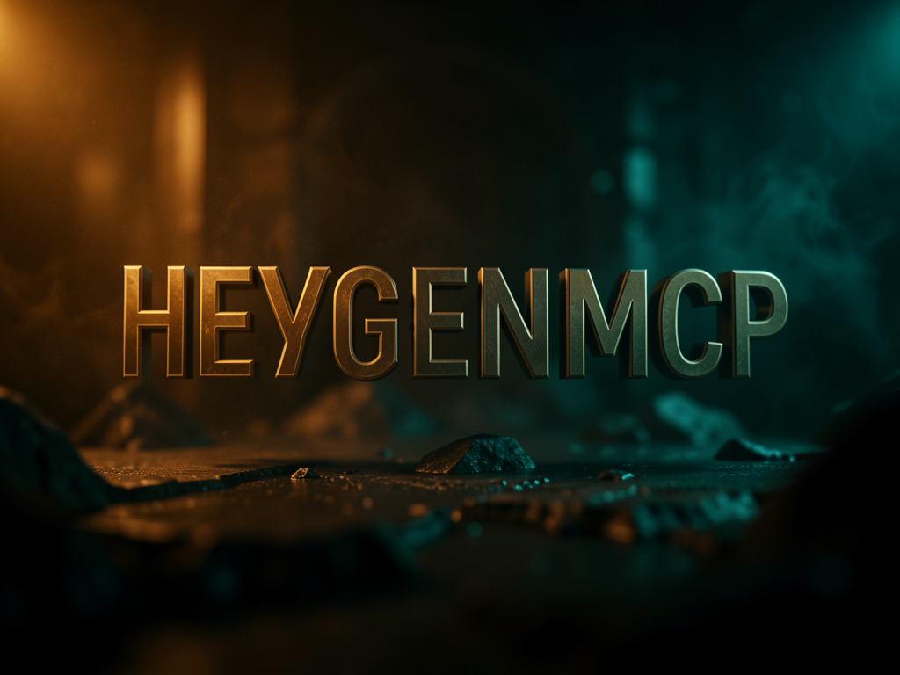

Duas skills que viram texto em vídeo de avatar no HeyGen — sem abrir o navegador, medindo o custo real de cada render.

O HeyGen cobra de dois lugares que não se cruzam: o pool de API (Pay-As-You-Go) e os créditos da assinatura. As duas skills fazem a mesma coisa — a diferença é qual cofre esvazia. Você escolhe pelo nome.
O motor. Roteiro → MP4 pela API v3, lista vozes e avatares, mede o custo e entrega no Telegram. Gasta o pool de API.
Mesma geração, via MCP remoto com OAuth. Gasta os créditos da assinatura — os que você já pagou.
O código só conhece slugs. Chaves e IDs de avatar/voz moram em ~/.config/heygen/, fora de qualquer repositório.
Um comando cobre o caminho inteiro. O --dry-run percorre as três primeiras etapas sem gerar nada — é onde você descobre erro de chave, avatar, voz ou engine sem pagar por isso.
Lê a quota antes e depois do render. O delta é o custo real — impresso no terminal, na legenda e salvo no resultado.json.
Omitir a engine é escolher: o HeyGen assume avatar_iv. O CLI manda avatar_iii e valida se o avatar aceita, antes de gerar.
Clone de voz costuma ficar como English na conta. O locale = pt-BR vai sempre no request — sem ele, a pronúncia sai em inglês.
Node 18+ e uma chave. Nada de npm install: os scripts usam só o runtime nativo (fetch, FormData, Blob).
Único requisito de máquina. Bun também roda.
# confira a versão node --version
Clone e aponte para ~/.claude/skills/ por symlink — editar no repo vale na hora.
git clone git@github.com:inematds/heygenmcp.git ~/projetos/heygenmcp cd ~/projetos/heygenmcp for s in heygen-cli heygen-mcp; do ln -s "$PWD/skills/$s" ~/.claude/skills/$s done
HeyGen → Settings → API. Copie o modelo e preencha — o arquivo fica fora do repo.
cp .env.example ~/.config/heygen/.env chmod 600 ~/.config/heygen/.env
Os quatro primeiros passos não gastam crédito nenhum. Só o passo 5 cobra.
O filtro de idioma aceita atalho: o HeyGen filtra pelo nome por extenso (Portuguese), e o CLI traduz o pt para você.
node skills/heygen-cli/scripts/heygen.mjs voices --lang pt # voice_id · nome · [idioma/gênero]
Lista os grupos de avatar da conta, com id, nome e tipo.
node skills/heygen-cli/scripts/heygen.mjs avatars
Em vez de decorar hash, crie ~/.config/heygen/looks.json (permissão 600) com o mapa slug → avatar. O voice é opcional e fixa a voz daquele look — necessário quando o avatar não é o dono do clone de voz. Slug que não existe aborta com a lista dos válidos, em vez de gerar com a cara errada.
// ~/.config/heygen/looks.json { "default": "escritorio", "looks": { "escritorio": { "id": "<avatar_id>", "voice": "<voice_id opcional>", "desc": "de camisa, mesa de escritório", "type": "digital_twin", "orient": "landscape" } } }
node skills/heygen-cli/scripts/heygen.mjs looks # confere os slugs (não chama a API)
O --dry-run valida chave, avatar, voz e engine contra a API de verdade — e custa zero. Rode antes de todo render novo: são os quatro erros que, sem isso, só aparecem depois de cobrados.
node skills/heygen-cli/scripts/heygen.mjs --dry-run --look escritorio ✓ key OK · créditos de API disponíveis: 13 DRY-RUN (nada gerado, custo 0): avatar ... -> OK (digital_twin) voice ... -> OK Nome da Voz [Portuguese/male] engine avatar_iii -> OK (aceita: avatar_v, avatar_iv, avatar_iii)
A fala é o único campo obrigatório. O resto tem default: 9:16, 720p, pt-BR, engine avatar_iii, e entrega no Telegram se ele estiver configurado.
node skills/heygen-cli/scripts/heygen.mjs --text "Sua fala aqui." # roteiro longo em arquivo, 16:9, sem enviar no bot node skills/heygen-cli/scripts/heygen.mjs \ --text-file roteiro.txt --look escritorio \ --ratio 16:9 --slug minha-campanha --no-send
Cada render deixa uma pasta com o vídeo, a fala exata usada e o resumo — incluindo o custo medido e a quota restante.
# <out_dir>/<slug>/ minha-campanha.mp4 # o vídeo roteiro.txt # a fala exata resultado.json # video_id, custo real, quota, ratio, res, engine
Todas as flags têm default sensato — na prática você troca duas ou três.
O default já é vertical e barato (720p). Só a fala muda.
node …/heygen.mjs \ --text "O corte que ninguém faz."
Suba a resolução só quando o destino pedir — ela pesa no custo.
node …/heygen.mjs --text-file r.txt \
--ratio 16:9 --res 1080pO CLI recusa antes de gerar se o avatar não aceitar a engine pedida.
node …/heygen.mjs --text "teste" \ --engine avatar_v --dry-run
Gere pela tool do MCP e entregue o MP4 com o helper — ele baixa, salva e manda no bot.
node skills/heygen-mcp/scripts/deliver.mjs \ --url "<URL_DO_MP4>" --slug campanha
O que está escrito aqui existe hoje no repo. O resto é declarado como limitação, não como promessa.
heygen-cli) ou pela assinatura (heygen-mcp), com voz por look, custo real medido, entrega no Telegram e --dry-run de custo zero.avatar_iv — e não há como forçar avatar_iii por ali. Quando a engine importa, use o heygen-cli, que tem --engine.locale=pt-BR é forçado, mas clone de voz cadastrado como English ainda pode escapar. Confira o primeiro render de ouvido; se não convencer, troque por uma voz PT nativa com --voice.video_id; o vídeo pode ficar pronto depois e ainda estar no dashboard do HeyGen. Falta um subcomando para buscar um render antigo pelo id.